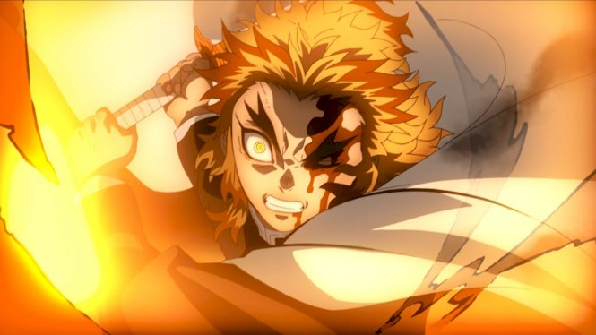

일본의 만화. 주간 소년 점프에서 연재된 시대극 판타지 배틀물 장르의 작품으로 작가는 고토게 코요하루. 그의 커리어 첫 번째 장편만화이다. 일본에서의 약칭은 '키메츠(鬼滅)'이며, 한국에서는 '귀멸', '귀칼'로 줄여서 불리는 경우가 많다.
때는 다이쇼 시대. 숯을 파는 마음씨 착한 소년 카마도 탄지로는, 어느날 도깨비에게 가족을 몰살당한다. 유일하게 살아남은 누이동생 카마도 네즈코 마저도 도깨비로 변하고 마는데... 절망적인 현실에 큰 타격을 입은 카마도 탄지로였지만, 동생을 인간으로 돌려놓기 위해, 가족을 죽인 도깨비를 심판하기 위해, 귀살대의 길을 가기로 결의한다. 인간과 도깨비가 엮어낸 애절한 오누이의 이야기가 지금 시작된다!!